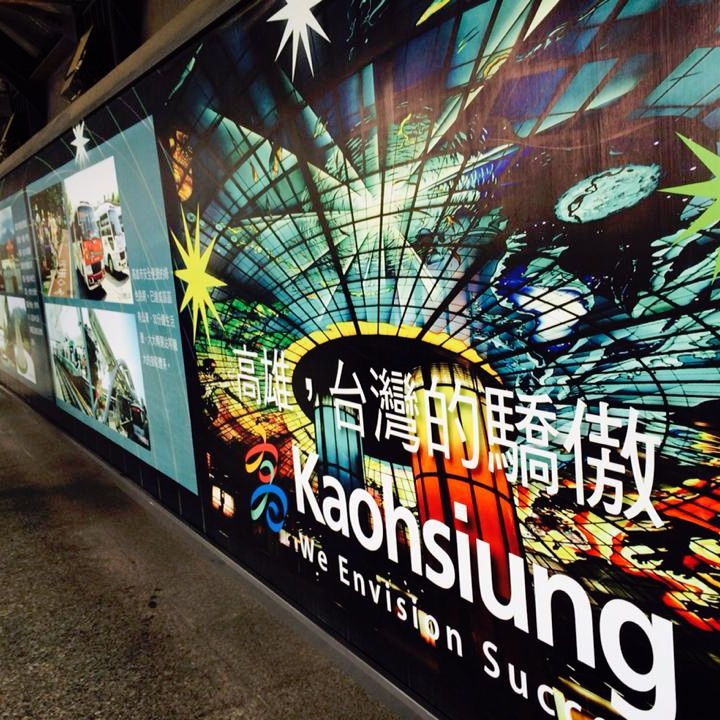

Kaohsiung
goways to get here
Kaohsiung International Airport (IATA: KHH) is about twenty minutes to the south of the city center. 1997 a new terminal was added dedicated to international connections and transfers to Taipei international airport. International flights from Asia arrive daily, but unfortunately, there are no direct flight connections between Taipei and Kaohsiung. However, the high speed rail is a hassle-free alternative. The airport is on the MRT Red Line and is also easily accessible by scooter, car or taxi (around 300NTD from central areas).
Taiwan High Speed Rail line (HSR). Traveling by train is a viable option for getting to Kaohsiung, as the fastest trains from Taipei cover the distance in just 90 minutes. There are 3 types of tickets: Business Reserved, General Reserved, and Non-Reserved. Reserved are approx. NT$1500 ($50 USD) and non-reserved slightly cheaper at NT$1400. Remember to get Designated Seats if you are traveling with luggages, it's it's NT$100 more expensive.
| by air to and from KHH | by Taiwan High Speed Train |
stay
BravoRelax Hostel, 40 Xinghua Rd Sinsing District, Kaohsiung City 80052, Taiwan (KRT Formosa Boulevard), ☎ +886 981317224, [21]. checkout: 11am. This small hostel is located very close to Formosa Boulevard station. The hostel has five floors and no elevator, so climbing the stairs in Kaohsiung heat is taxing. Rooms are fairly large and have air conditioning; doors to the room are very noisy, however, and can affect your sleep if you have roommates that open them during the night. Kitchen and common area are very small. Night markets close nearby. 500.
Cozy Planet Hostel (Cozy Planet), 8F-3. No. 331 (8th floor), Jhonghua 4th Road, Qianjin District Kaohsiung City, Taiwan (When you see Splendid Field Dental Clinic, enter the door between the clinic and Suzuki Motorbike store. Reception is on the 8th floor.), ☎ +886-(0)921-576-577, [22]. checkin: 3pm; checkout: 11am. Cozy Planet hostel has both dormitories (2,4 and 6 beds) and private rooms, free wifi, AC, hot water, fully equipped kitchen, lounge with satellite TV, guest computers, and lockers. The place is centrally located near metro station, sights and shopping area. Complimentary daily room cleaning, laundry service, bikes, and simple breakfast. Non-smoking and no pets allowed. Dorm NT $550+.
Lukot INN Traditional Taiwanese style guesthouse, 5 min walk from Sizihwan Stn., near NSYSU and Gushan ferry pier (to Cijin), single NT$600, twin NT$900, triple NT$1350, dorm NT$450, tapir@lukotinn.net, 0930323933.
eat
There are numerous seafood restaurants dotting the main street in Cijin Island, all offering the same fresh seafood for about NT100-200 per dish. It is a great idea to go in a small group and order a few dishes to try, probably one more dish than the number of people in your group. In the evening, a night bazaar goes into full swing. There are lots of little eats to eat as per Taiwan's night markets, BBQ squid, mochi to name a few are particularly good.
street foods
Night markets are a great place to pick up cheap local foods, including stinky tofu, barbecued squid, red bean pancakes and the like.


Lunchboxes are common throughout the city, and a choose-your-order buffet take-out typically ranges from 50 to 100 NT$. The food is typically fried, with a mix of vegetables and meats.
The ubiquitous 7-Eleven stores have tea eggs, hot dogs, packaged beverages and junk food. Lunchbox style microwavables are also available, including dumplings, spaghetti and curry rice.
see
City Highlight
- The Dome of Light. is a public artwork in the Formosa Boulevard MRT Station. Created by Italian artist Narcissus Quagliata, it is the world's largest stained glass installation. The dome is divided into four sections: water, earth, light and fire. It also takes the form of a yin and yang symbol. An audio guide (available in several languages) can be borrowed from the KRTC Art Shop inside the station. It costs NT$30 and gives a half hour narration of the key features of the artwork.
- Central Park. Get off the MRT at Central Park Station and go out exit 1. The park has a small hedge maze in the middle, a pond with some bridges and fish, clay tennis courts, and "Urban Spotlight," a cafe with a stage to display local talent.
- Pier 2 Art District. Near Sizihwan MRT Station on the orange line. The art district spans over the area of a former train station and shipping pier and is visited by locals for strolls in the park or picnics on the meadow. The old railway tracks have been transformed into an open space with old locomotives, flowers and pieces of art. Following the bike path towards Pier 2, there are murals on the walls of old storage halls and a huge bumblebee statue (from Transformers). The halls at Pier 2 show changing exhibitions. All over the area, coffee and ice cream shops invite the visitor to rest and enjoy drinks and snacks.

- Kaohsiung Lantern Festival. At the end of Chinese New Year, near the Kaohsiung harbour and along the Love River, the Kaohsiung Lantern Festival is filled with a variety traditional lanterns and more modern light sculptures, nightly fireworks shows, Taiwanese food stands and other art programs and live concerts
- Urban Spotlight. Located at the corner of Central Park, Urban Spotlight is a cafe with a stage where local live bands perform in the evening. Take a walk around Central Park then stop at the cafe to cool off.
- Night Markets. Food, games, and shopping. Try the Liuho Night Market, which is a tourist market. Ruifeng night market, at the corner of YuCheng and Nanping, heaves with locals. Closed Mondays and Wednesdays.
- Enjoy a coffee in one of the waterfront cafes along the Love River.
let's go
Kaohsiung is, with over 2.7 million inhabitants, the second most populated city in Taiwan and is located in the south of the island. Kaohsiung is known as the Harbor Capital of Taiwan. In recent years the city has made great strides in transforming itself from a primarily industrial city into a modern Asian metropolis, and several areas of the city, such as along the banks of the Love River, have benefited from major beautification projects under the tenure of former mayor Frank Hsieh. Its year-round fine weather and the low cost of living make Kaohsiung the place to visit
buy tickets
from oversea
already in Taiwan